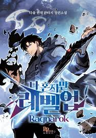
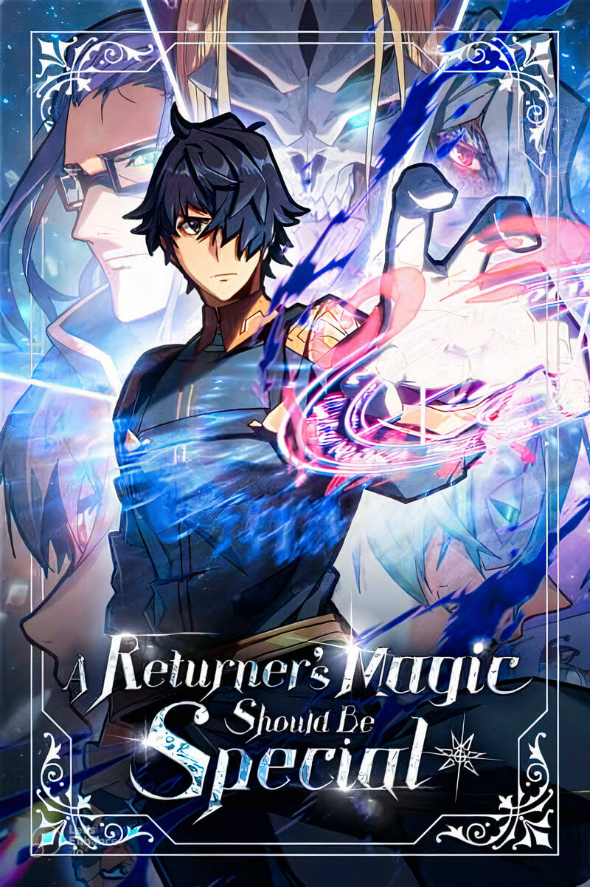

Solo-leveling Ranarock

The Earth’s existence is under threat once more as Itarim, the gods of other universes, seek to fill the
void left by the Absolute Being. Sung Jinwoo has no choice but to send Beru, the shadow ant king, to awaken
his son’s powers and start him on the journey he once took. Suho must conquer the shadow dungeon and earn his
place in the world of hunters as he navigates through a new world against a new evil looking to swallow the
world whole.
Read More
The Returners Magic Should Be Special

For 10 years, magical prodigy Desir and his party have been battling inside the mysterious Shadow Labyrinth
and against the end of the world. Much of humanity has already perished and just as Desir is about to be killed,
he’s sent back 13 years into the past. Despite knowing the cursed future that lies ahead, Desir steels his resolve
as he sees an opportunity to train his friends and better prepare to face Armageddon together, without losing the
ones they love!
Read More
The Greatest Estate Developer

When civil engineering student Suho Kim falls asleep reading a fantasy novel, he wakes up as a character in the book!
Suho is now in the body of Lloyd Frontera, a lazy noble who loves to drink, and whose family is in a mountain of debt.
Using his engineering knowledge, Suho designs inventions to avert the terrible future that lies in wait for him. With
the help of a giant hamster, a knight, and the world’s magic, can Suho dig his new family out of debt and build a better
future?
Read More